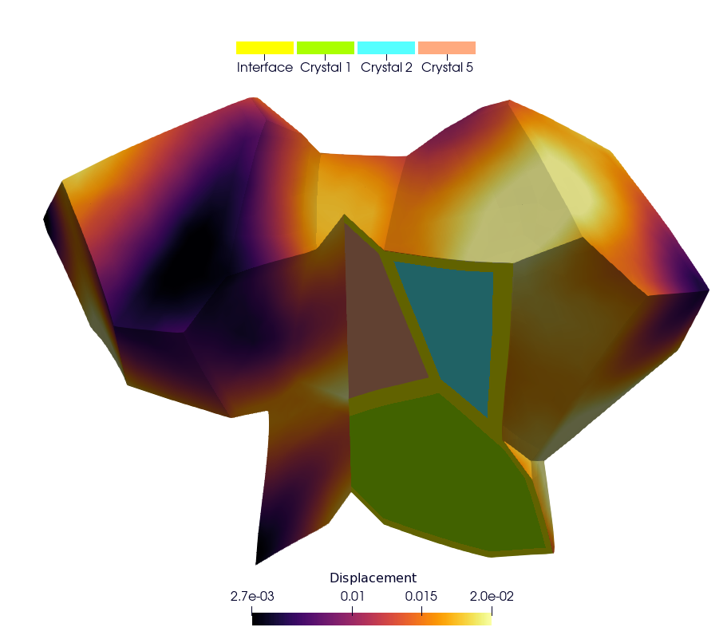
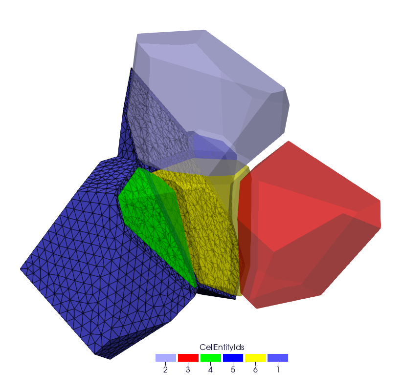
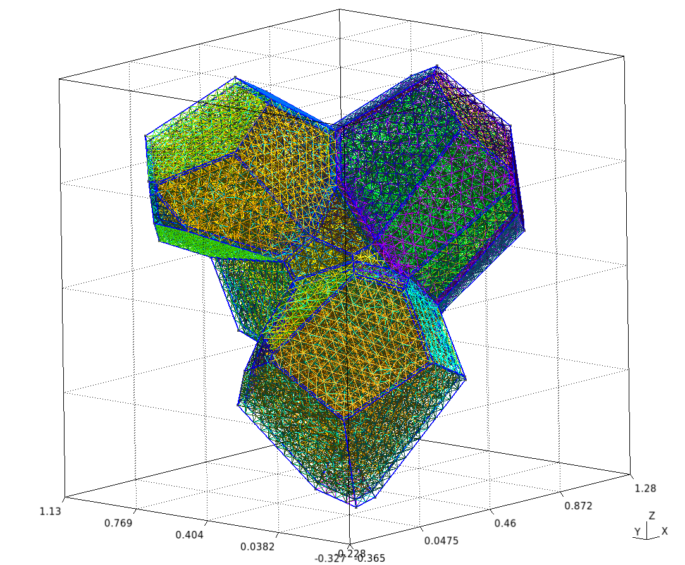
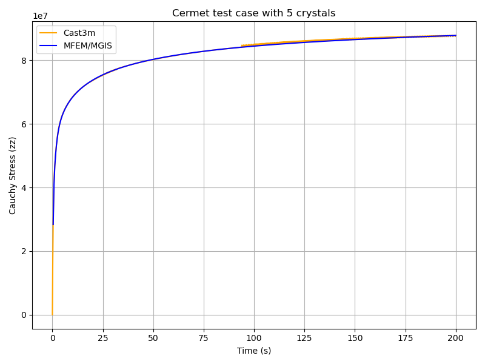

Cermet simulation

Repository: https://github.com/rprat-pro/mm-opera-hpc/tree/main/cermet
Description
This case is similar to the UO2 polycrystal with the addition of a metallic interface
at the grain boundary. In the Gmsh mesh each grain has a material ID (from 2 to
\(N_{\text{grain}} + 1\)), as well as its orientation needed for the orthotropic
basis. The metallic interface has the material ID equal to 1, and is considered to be made
of an isotropic elasto-viscoplastic material. In addition to the mechanical analysis, this
example implements a fixed-point algorithm enabling the simulation of a uniaxial
compression/tensile test with periodic boundary conditions.
Parameters
Boundary conditions: periodic boundary conditions are applied on the RVE faces. The loading is imposed in one direction, ensuring compatibility and equilibrium across periodic faces. More precisely, the axial component \(F_{zz}\) of the macroscopic deformation gradient is imposed. The off-diagonal components of the macroscopic deformation gradient are set to zero. The components \(F_{xx}\) and \(F_{yy}\) are the unknowns, determined via the fixed-point algorithm imposing null values for the components \(S_{xx}\) and \(S_{yy}\) of the macroscopic Cauchy stress tensor. The main result used for verification is a stress-strain curve with the evolution of the axial component \(S_{zz}\) of the Cauchy stress as a function of \(F_{xx}\).
[Crystal] Constitutive law: The UO₂ crystal plasticity law used in the example is detailed in the reference [1]. The corresponding MFront file is available on the MMM GitHub repository. For uranium dioxide, the crystal symmetry is cubic, with the following orthotropic elastic properties:
Young’s modulus = \(222\times10^9\ \text{Pa}\)
Poisson ratio = 0.27
Shear modulus = \(54\times10^9\ \text{Pa}\)
[Metallic Interface] Constitutive law: The Norton creep law used for the interface is derived from the elasto-viscoplastic properties of chromium coatings used in eATF claddings, as proposed in the literature. The corresponding MFront file is available on the MMM GitHub repository.
Elastic properties: - Young’s modulus = \(276\times10^9\ \text{Pa}\) - Shear modulus = \(54\times10^9\ \text{Pa}\)
Norton creep law:
\[\dot{\varepsilon}_{eq} = \frac{A D_0 \exp\!\left(-\frac{Q}{R T}\right)}{b^2} \left( \frac{\sigma_{eq}}{C} \right)^n\]with the parameters:
\(A = 2.5\times10^{11}\) [a.u.]
\(n = 4.75\)
\(Q = 3.0627\times10^{5}\) [a.u.]
\(D_0 = 1.55\times10^{-5}\) [a.u.]
\(b = 2.5\times10^{-10}\) [a.u.]
Finite element order: 1 (linear interpolation)
Finite element space: H1
Simulation duration: 200 s
Number of time steps: 500
Linear solver: HyprePCG (solver / preconditioner)
Mesh generation
This section explains how to generate a sample mesh with Merope.
Before running the script, make sure that the environment variable
MEROPE_DIR is properly loaded.
Then, you can generate the mesh in two steps:
source ${MEROPE_DIR}/Env_Merope.sh
python3 mesh/5grains.py # generate 5grains.geo
gmsh -3 5grains.geo # generate 5grains.msh
You will obtain a 3D mesh (5grains.msh) of a polycrystalline sample with 5 grains.
Options
Mesh Generation Examples
The mesh can be customized by adjusting the input parameters in the Python script.
Below are two examples:
Small Example
This setup generates a small polycrystalline mesh (Gmsh version 11.1):
5 grains
12,992 nodes
88,687 elements
L = [1, 1, 1]
nbSpheres = 20
distMin = 0.3
randomSeed = 0
layer = 0.02
MeshOrder = 1
MeshSize = 0.05


Large Example
This setup generates a realistic polycrystalline mesh with:
250 grains
12,913,361 nodes
86,213,779 elements
L = [5, 5, 5]
nbSpheres = 250
distMin = 0.1
randomSeed = 0
layer = 0.04
MeshOrder = 1
MeshSize = 0.02
Run your simulation
Command-line Usage
Usage: ./cermet [options] ...
Option |
Type |
Default |
Description |
|---|---|---|---|
|
— |
— |
Print the help message and exit. |
|
string |
|
Mesh file to use. |
|
int |
|
Finite element order (polynomial degree). |
|
int |
|
Refinement level of the mesh (default = 1). |
|
int |
|
Run the post-processing step. |
|
int |
|
Verbosity level of the output. |
|
double |
|
Duration of the simulation (default = 5). |
|
int |
|
Number of simulation steps (default = 40). |
|
string |
|
Vector file to use. |
|
string |
|
Main output file containing: - Evolution of the diagonal components of the deformation gradient. - Evolution of the diagonal components of the Cauchy stress. |
How to Run it
You can run the simulation in parallel using MPI. Below are two examples.
Basic Test
Runs a short simulation with:
Duration = 0.5 s
1 timestep
Mesh = 5grains.msh
Refinement level = 0
mpirun -n 12 ./cermet --duration 0.5 --nstep 1
Full Test
Runs a longer simulation with:
Duration = 200 s
400 timesteps
Custom mesh (
yourmesh.msh)Refinement level = 1
mpirun -n 12 ./cermet --duration 200 --nstep 400 -r 1 --mesh yourmesh.msh
Results
By default, the simulation generates the file cermet.res when running:
mpirun -n 12 ./cermet
To validate the results, the Cauchy stress component in the z-direction (\(\overline{\sigma}_{zz}\)) can be compared with reference values obtained from Cast3M.
Plot and Compare
To visualize and compare the results, run the following Python script:
python3 plot_cermet_results.py
This script generates a figure named plot_cermet.png as shown below.
In this figure, we observe good agreement between Cast3M and MFEM-MGIS results.
As observed for the polycrystal test case, there are some oscillations in the Cast3M
solution, which is of poorer quality compared to the MFEM-MGIS results.
The main conclusion is that the implicit formulation of MFEM-MGIS (full Newton algorithm
using the tangent stiffness) is highly performant—thanks to quadratic convergence and
parallelization—and provides a high-quality solution.
For verification, the number of time steps has been significantly increased to minimize
the oscillations observed in Cast3M.

Check the values
To verify the simulation results, run:
python3 check_cermet_restults.py
The expected output is: Check PASS.
Example of the detailed output:
Time MFEM/MGIS CAST3M RelDiff_% Status
0 0.4 2.837174e+07 29462000.0 3.842755 OK
1 0.8 4.101172e+07 41798000.0 1.917200 OK
2 1.2 4.674008e+07 47113000.0 0.797856 OK
3 1.6 5.042402e+07 50687000.0 0.521535 OK
4 2.0 5.321536e+07 53452000.0 0.444677 OK
.. ... ... ... ... ...
495 198.4 8.775101e+07 87802000.0 0.058103 OK
496 198.8 8.775917e+07 87724000.0 -0.040076 OK
497 199.2 8.776730e+07 87804000.0 0.041820 OK
498 199.6 8.777539e+07 87814000.0 0.043988 OK
499 200.0 8.778345e+07 87737000.0 -0.052917 OK
[500 rows x 5 columns]
Check PASS.
This table shows the comparison between the simulated Cauchy stress values and the reference Cast3M results, along with the relative difference and a status check.